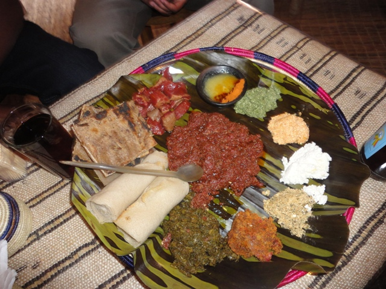

Niter Kibbeh | ንጥር ቅቤ
This is a delicious base for making Ethiopian foods. It's a simple clarified butter mixed with various spices.
Add it to any dish to give it a complex taste!
Ingredients
- 500g unsalted butter
- 1 onion, diced
- 1 tbsp ginger, minced
- 1 tbsp garlic, minced
- 4 cloves
- 4 black cardamom pods
- 1 tsp black peppercorns
- 1 tsp cumin
- 1 tsp fenugreek (methi)
- 1 tsp turmeric
Steps
- Saute the ginger and garlic with a bit of oil.
- Add the butter, being careful to cook it slowly so you don't burn the ingredients.
- Add 1 cup of water and stir.
- Put the pot in the fridge for a few hours for the mix to cool.
- Take the pot out of the fridge, and poke some holes in the butter. Pour out the water underneath.
- In a separate pan, brown the cloves, black cardamom pods, black peppercorns, cumin, and fenugreek (methi).
- Let the spices cool, then grind them in a blender to make a powder.
- Melt the butter again in the pot, and add the spices. Also add the turmeric and any other spices.
- Let it simmer for about an hour to let the spices infuse.
- Strain the butter with a cheesecloth and refrigerate.
- Add to any dish!
Home